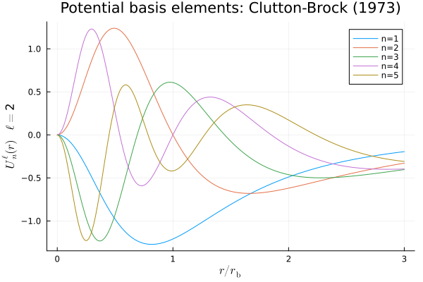

Quickstart Example
In this example code, we will make a figure of the radial basis elements from Clutton-Brock (1973).
import AstroBasis
using Plots
using LaTeXStringsNow create the basis:
println("Creating the basis ... ")
G, rb = 1., 1.
ltest, nradial = 2, 5
basis = AstroBasis.CB73Basis(lmax=ltest,nradial=nradial,G=G, rb=rb)Define where to make the basis points:
# Points (rescaled radius)
println("Compute basis values ... ")
nx = 200
rmin, rmax = 0., 3.
tabx = collect(LinRange(rmin/basis.rb,rmax/basis.rb,nx))Use the common function tabUl! to fill the table:
# Compute the values of the potential basis elements and store them
tabU = zeros(nradial,nx) # Storage for the basis values
for j = 1:nx
# Compute all the basis elements values at a given location r (the result is stored in basis.tabUl)
AstroBasis.tabUl!(basis,ltest,tabx[j]*basis.rb)
# Store them in tabU
for i = 1:nradial
tabU[i,j] = basis.tabUl[i]
end
endAnd finally plot:
# Plot the curves
println("Plotting ... ")
labels = reshape(["n="*string(k) for k=1:nradial],(1,nradial)) #Need to be row
plU=plot(tabx, transpose(tabU), title = "Potential basis elements: Clutton-Brock (1973)",label=labels)
xlabel!(plU, L"$r / r_{\mathrm{b}}$")
ylabel!(plU, L"$U^{\ell}_n (r)\quad \ell=$"*string(ltest))
savefig(plU,"CluttonBrock73.png")
println("The plot has been saved in the same folder as this example script under the name 'CluttonBrock73.png'.")